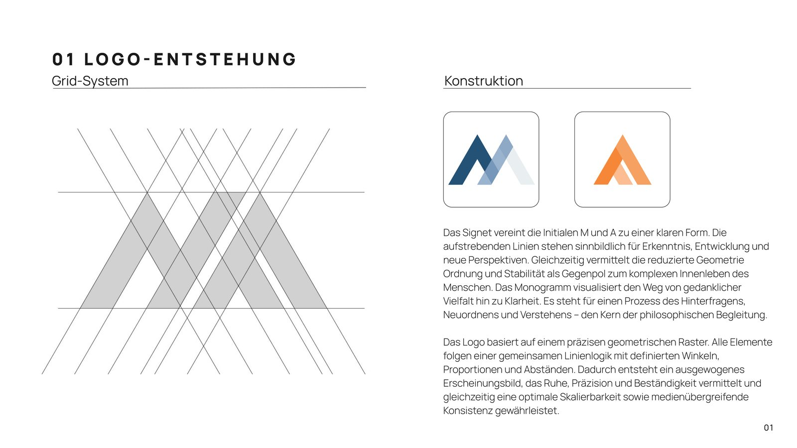
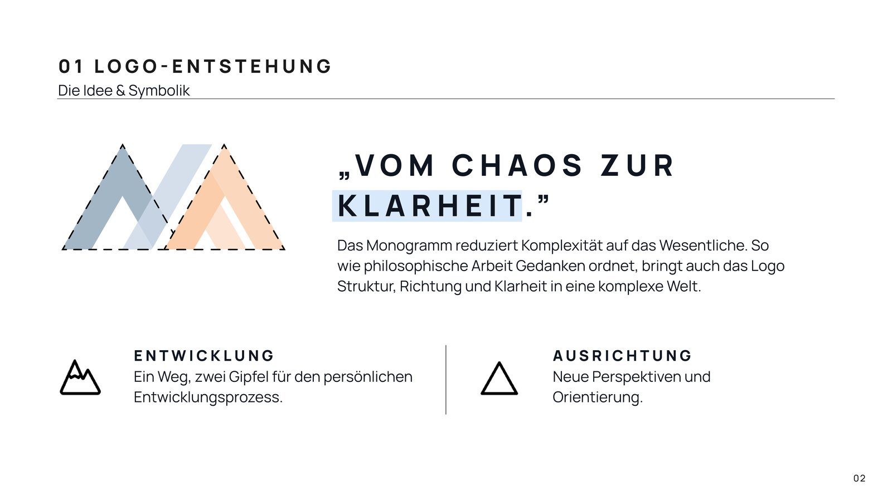
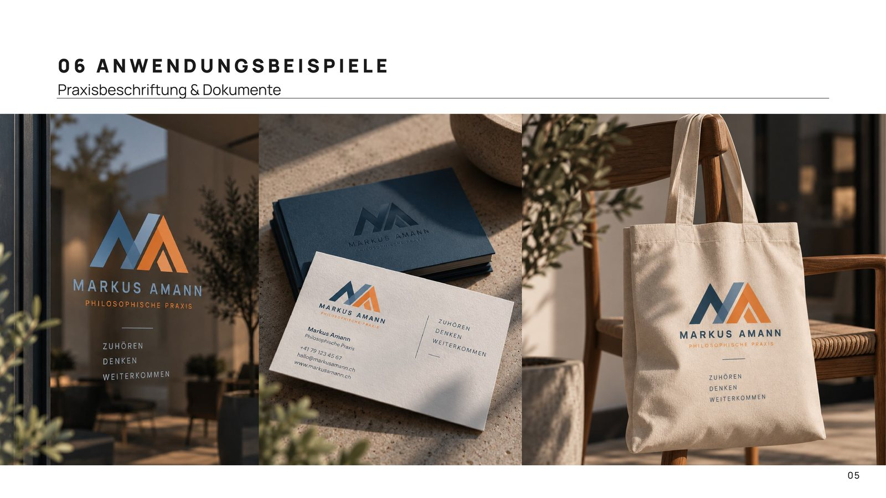
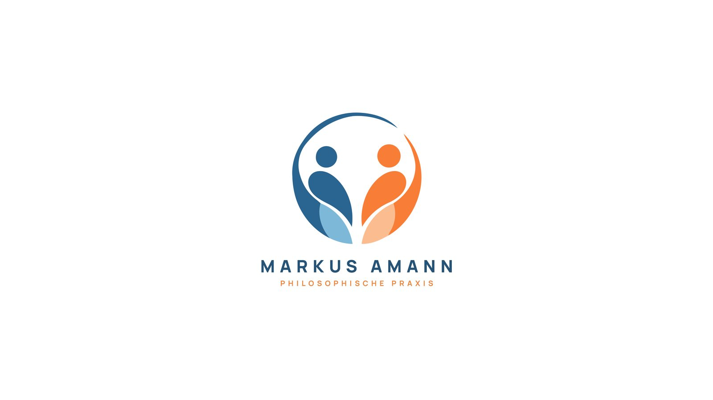
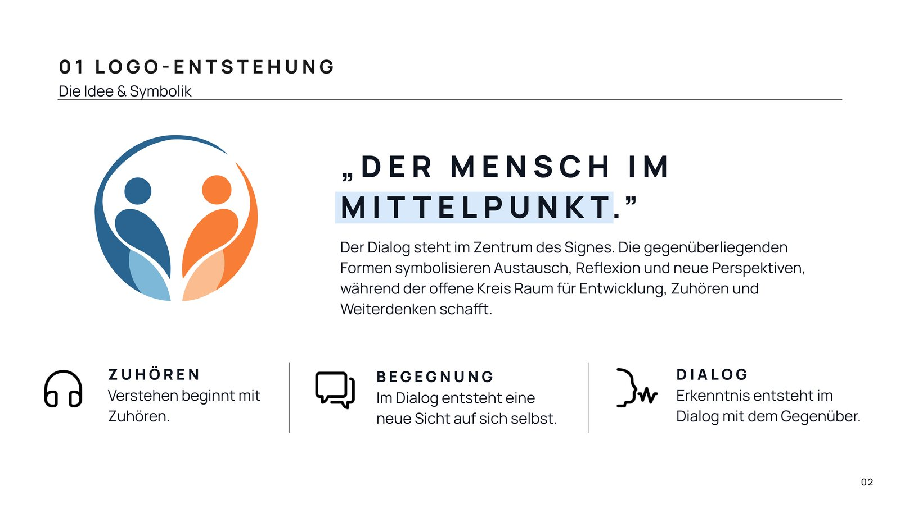
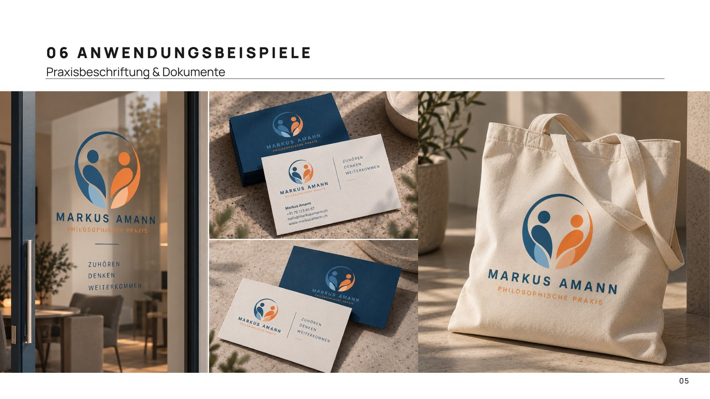

Überblick
Mag. Markus Amann arbeitet als Philosophischer Praktiker, Supervisor und Coach, mit Praxen in St. Pölten und Wien. Seine Arbeit lässt sich schwer in ein Bild fassen: keine Therapie, keine Beratungsfirma, sondern Gespräche, die Gedanken ordnen.
Wir haben zwei Markenrichtungen entwickelt. Jede mit eigenem Signet, Konstruktion, Farbwelt, Schrift und Anwendungen, damit die Entscheidung an fertigen Beispielen fällt und nicht an Skizzen.
Vom Chaos zur Klarheit.
Die Initialen M und A werden zu zwei Gipfeln: ein Weg, der Vielfalt auf das Wesentliche bringt.



Tiefe und Wärme.
Mitternachtsblau gibt Ruhe und Orientierung, Impulsorange setzt den Gegenpol für Erkenntnis und Bewegung. Die hellen Töne greifen beide Pole weicher auf.
Der Mensch im Mittelpunkt.
Zwei Figuren im offenen Kreis: Dialog, Zuhören und Begegnung als Zeichen.



Vom Gespräch zum Brand Board.
- 01
Zuhören
Gespräch, bestehende Texte und Website: Was macht diese Arbeit aus, und was unterscheidet sie von Therapie und Coaching?
- 02
Skizzen und Raster
Zwei Ideen weiterverfolgt und jede auf ein geometrisches Raster gebracht, damit das Zeichen in jeder Grösse hält.
- 03
Farbe und Schrift
Eine Farbwelt mit zwei Polen und Manrope als Hausschrift, von der Überschrift bis zum Fliesstext.
- 04
Anwendung
Praxisschild, Visitenkarten und Tasche als Mockups, zusammengefasst in einem Brand Board je Richtung.
Ähnliches
vor der Brust?
Fünfzehn Minuten, ehrliche Einschätzung, keine Verpflichtung.
Gespräch buchen